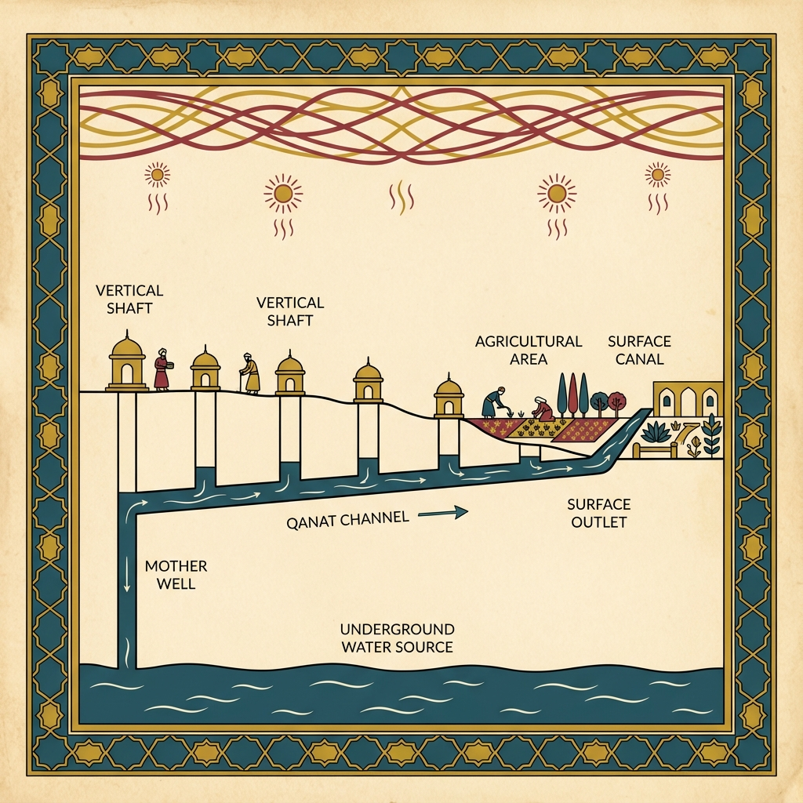

To understand the mind of a civilization, you must first understand the ground it walks on. Before there were kings, before there were poets, before there were laws, there was the Land.
If you look at the Earth from space, the Iranian plateau stands out as a distinct, geological entity. It is a massive, raised triangle of earth, squeezed between the Caspian Sea to the north and the Persian Gulf to the south. It is ringed by two titanic mountain ranges—the Zagros in the west and the Alborz in the north—that act as massive, natural walls.
In the center of this fortress lies a forbidding emptiness: the Kavir and the Lut, the great salt deserts.
This geography is a paradox. It is a fortress that is hollow in the middle. It pushes its population to the edges, into the foothills and the valleys, creating a "Ring Network" of cities that face outward toward the world, with their backs to a silent, uninhabitable void.
This specific geometry—a high-pressure container with a hollow core—is the primary Roots (Level 1) of the Persian system. It presented the ancient Iranians with two existential problems that would define their entire history.
The first problem was water.
Iran is arid. It does not have a Nile or a Tigris that floods predictably, gifting life to the soil. In Iran, the water is hidden. It is trapped deep underground, at the foot of the mountains, often kilometers away from the fertile soil.

To survive, the ancient Iranians had to invent a technology of immense patience and cooperation: the Qanat.
A Qanat is a subterranean aqueduct. It involves digging a mother-well into the water table of the mountain, and then tunneling by hand for tens of kilometers, at a precise, gentle slope, to bring that water to the arid plains.
You cannot build a Qanat alone. You cannot build it with slaves, because it requires skilled engineering and voluntary maintenance. You cannot build it in a year. It takes generations. It requires a social contract of extreme durability. If the upstream village poisons or diverts the water, the downstream village dies.
This geological constraint forced the evolution of High Internal Coherence.
It taught the Persians their first and most enduring lesson: Survival depends on what is hidden.
This is the origin of the Persian concept of Andaruni (The Inner). Just as the life-giving water must be shielded from the sun to prevent evaporation, the core values of the culture, the family, and the self must be shielded from the harshness of the public sphere.
The Qanat is the physical ancestor of the Persian Soul. It is the first instance of the Liquid Fortress—a hard structure built to protect a flowing core.